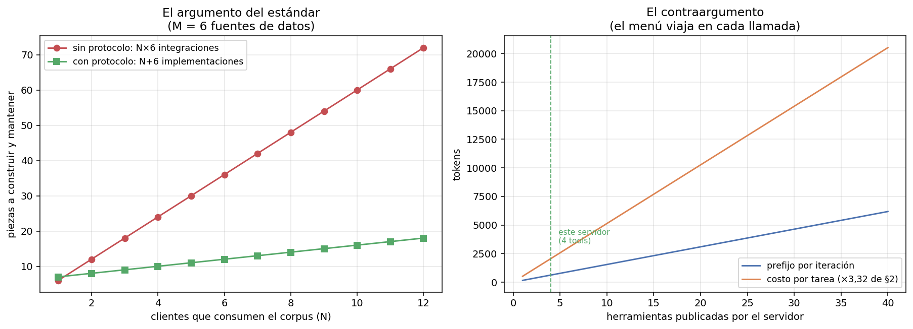

04 — MCP como estándar¶
El problema es de integración, no de capacidad¶
Hasta §3 las herramientas del agente vivían dentro del proceso: se registraban en
un ToolRegistry de Python y se llamaban en memoria. Eso funciona mientras haya un
solo agente. En cuanto el corpus lo consume algo más —un cliente de escritorio, un
IDE, otro equipo, un script de auditoría— la pregunta deja de ser cómo llamar a la
herramienta y pasa a ser quién reimplementa la búsqueda.
Es el problema clásico de interoperabilidad, con la aritmética de siempre:
N clientes M fuentes sin protocolo con protocolo razón
------------------------------------------------------------------
2 2 4 4 1.0×
3 4 12 7 1.7×
5 6 30 11 2.7×
10 20 200 30 6.7×
Sin protocolo, cada par cliente-fuente es una integración con su autenticación, su formato y su mantenimiento: N×M. Con protocolo, cada cliente lo implementa una vez y cada fuente lo expone una vez: N+M. Y como muestra la primera fila, con N=M=2 el estándar no gana nada: el argumento es de escala, y adoptarlo antes de tenerla es la sobreingeniería que la doctrina del repo trata de evitar.
Lo que MCP estandariza no es la inteligencia sino la interfaz, con exactamente el
mismo rol que USB, ODBC o POSIX en su momento: mueve la competencia de "quién tiene
la integración" a "quién tiene los datos" — que para un producto sobre corpus
regulatorio chileno es exactamente donde conviene que esté (05 §9).

El servidor: entregable, no ejercicio¶
mcp_corpus_server.py publica el corpus chileno
por el protocolo. Se levanta con:
y se configura en cualquier cliente MCP con:
{
"mcpServers": {
"corpus-chileno": {
"command": "uv",
"args": ["run", "python", "06-harness/code/mcp_corpus_server.py"],
"cwd": "/ruta/a/estudio-personal"
}
}
}
Lo que expone son las capacidades que el repo ya había construido, ahora direccionables desde afuera:
servidor : corpus-normativo-chileno v1.0.0
versión de protocolo: 2026-07-28
publica: 4 tools, 1 resources, 1 plantillas de resource, 1 prompts
buscar_corpus (consulta, k) ← BM25 de 02
leer_norma (doc_id, pagina) ← corpus real, paginado
vecinos_grafo (doc_id, tipo_relacion, direccion) ← grafo auditado de 05
alcance_normativo (doc_id, max_saltos, direccion) ← dependencia transitiva, §3
Contra el corpus real, por el protocolo:
--- alcance_normativo({"doc_id": "decreto-03-reglamento-compras-publicas.txt",
"max_saltos": 2, "direccion": "in"})
4 documentos dependen de decreto-03-reglamento-compras-publicas.txt en hasta 2 saltos:
- do-02-extracto-licitacion-publica.txt
- glosa-05-presupuesto-interior.txt
- oficio-02-contraloria-trato-directo.txt
- resolucion-01-chilecompra-compra-agil.txt
--- vecinos_grafo({"doc_id": "ley-01-dl-825-iva-base.txt",
"tipo_relacion": "modifica", "direccion": "in"})
ley-02-ley-21210-modernizacion.txt --modifica--> ley-01-dl-825-iva-base.txt
fundamento: «Artículo primero.- Introdúcense las siguientes modificaciones
al Decreto Ley Nº 825, de 1974:»
Esa última respuesta es la que justifica todo el trabajo de 05: la relación no
llega sola, llega con la cita literal que la sustenta. Un cliente que consuma
este servidor puede citar la fuente y no el grafo.
La decisión de diseño que más se equivoca: qué NO exponer¶
El servidor no publica responder, aunque harness_lib la tenga.
responder existe porque el bucle necesita una señal de terminación: es una
preocupación del harness, no del corpus. Un servidor MCP publica capacidades
sobre un dominio; el control de flujo del agente se queda del lado del cliente.
Mezclarlos es lo que convierte un servidor reutilizable en el backend privado de un
solo agente — y es un test explícito, no una intención.
La misma frontera explica el reparto entre las tres primitivas del protocolo:
| Primitiva | Qué es | Quién la controla | En este corpus |
|---|---|---|---|
| Tool | Una acción que el modelo decide invocar | El modelo | Buscar, leer, recorrer el grafo |
| Resource | Datos que el cliente puede leer y cachear por su cuenta | La aplicación cliente | corpus://indice, corpus://{doc_id} |
| Prompt | Una plantilla que el servidor versiona | El usuario | auditar_dependencias |
Resources y prompts son las dos primitivas que casi nadie usa, y las dos mueven trabajo de lugar:
corpus://indicepublica los 40 identificadores canónicos como resource. Si fuera una tool, descubrir el catálogo gastaría un turno del modelo. Como resource, el cliente lo lee y lo cachea sin consumir contexto — que es exactamente el recurso escaso de §2.auditar_dependenciasversiona del lado del servidor la consulta más frecuente del dominio: "si cambiara esta norma, ¿qué queda desactualizado?". Renderizado, sale con la estrategia de uso incluida:
Si cambiara ley-03-ley-19886-compras-publicas.txt, ¿qué documentos del corpus
quedarían potencialmente desactualizados?
Usá 'alcance_normativo' con direccion='in' y max_saltos=2 para obtener el conjunto,
y después 'vecinos_grafo' sobre los casos dudosos para ver la cita literal que
sustenta cada dependencia. Respondé con la lista de documentos y el fundamento de
cada uno.
Es el patrón de 03 §3 —gestión de prompts versionados— movido al servidor: quien
conoce el dominio escribe cómo se consulta, y los N clientes lo heredan. Un detalle
del contrato: los argumentos de un prompt son strings, sin JSON Schema. Es
deliberadamente más débil que una tool, porque un prompt es una plantilla de texto
y no una llamada tipada; la validación queda a cargo del servidor.
El contraargumento: el menú se paga en cada iteración¶
Acá es donde §3 le pone un límite al entusiasmo por el estándar. Los esquemas declarados por este servidor, medidos como llegan al cliente:
herramienta tokens de esquema
------------------------------------------
vecinos_grafo 203
alcance_normativo 186
buscar_corpus 116
leer_norma 113
TOTAL 618
Cuatro herramientas por 618 tokens. Con el multiplicador de reenvío de §2 —3,32 iteraciones por tarea— son ~2.052 tokens por tarea sólo en tener el menú a la vista, se use o no.
Un servidor de 40 herramientas del mismo tamaño promedio costaría ~6.180 tokens de prefijo: más que todo el contexto de una tarea típica de este módulo, antes de que el agente haga nada.
Y ese es el costo de un servidor. Un cliente con cinco servidores conectados arranca cada iteración con un menú que no cabe en el presupuesto. La objeción habitual a los servidores grandes es que "confunden al modelo"; la objeción medible es que cobran un impuesto fijo sobre todo lo que el agente haga.
De ahí tres reglas de diseño para publicar un servidor:
- Pocas herramientas, de la granularidad correcta.
alcance_normativoen vez de encadenarvecinos_grafo(§3) es exactamente esto: menos llamadas y menos menú. - Lo que es dato, va como resource. El catálogo no necesita un turno del modelo.
- Descripciones cortas y con ruteo. La descripción viaja en cada iteración y es parte del prompt aunque no se escriba en el prompt.
Los errores también viajan por el protocolo¶
El contrato de error de §3 no se pierde al cruzar la frontera del proceso:
--- leer_norma({"doc_id": "ds-250"})
ERROR: 'ds-250' no es un documento del corpus. Usá 'buscar_corpus' o el
recurso corpus://indice para ubicarlo.
--- leer_norma({"doc_id": "ley-01-dl-825-iva-base.txt", "pagina": 99})
ERROR: página 99 fuera de rango para 'ley-01-dl-825-iva-base.txt'.
Este documento tiene 2 página(s). Volvé a llamar con pagina entre 1 y 2.
--- vecinos_grafo({"doc_id": "...", "tipo_relacion": "invalida"})
ERROR: tipo_relacion 'invalida' inválido. Valores admitidos: aplica, cita,
deroga, interpreta, modifica, reglamenta.
Con una diferencia importante respecto de harness_lib: acá el error se devuelve
como resultado, no como excepción. Un servidor que lanza una excepción de
protocolo le dice al cliente "la llamada falló"; uno que devuelve texto de error le
dice al modelo qué hacer. La primera es una condición de transporte, la segunda es
el canal de enseñanza de §3 — y sólo la segunda llega al modelo.
Seguridad: el identificador canónico como frontera¶
Un servidor MCP es una superficie de ataque: acepta parámetros generados por un
modelo, que a su vez pudo haber leído texto de un tercero. La versión ingenua de
leer_norma haría open(CORPUS_DIR / doc_id) y sería vulnerable a path
traversal.
La defensa acá no es sanitizar la ruta, es no tener rutas: doc_id se valida
contra el catálogo de 40 identificadores canónicos, y lo que no está en el catálogo
no existe.
--- leer_norma({"doc_id": "../../../etc/passwd"})
ERROR: '../../../etc/passwd' no es un documento del corpus.
Es la doctrina #6 del portfolio —llaves canónicas, nunca nombres libres— dando un beneficio de seguridad que no era su motivación original. Está cubierto por tests parametrizados con cuatro variantes de escape. §6 trata el resto del problema: permisos, herramientas con efectos y sandbox.
Gobernanza: qué cambia cuando el protocolo deja de ser de un proveedor¶
El dato relevante para quien decide construir sobre esto:
- 9 de diciembre de 2025: Anthropic dona MCP a la Agentic AI Foundation
(AAIF), un fondo dirigido bajo la Linux Foundation, co-fundado con Block y
OpenAI y con apoyo de Google, Microsoft, AWS, Cloudflare y Bloomberg. MCP entra
como proyecto fundador junto a
goose(Block) yAGENTS.md(OpenAI) (Anthropic, Linux Foundation, blog MCP). - 28 de julio de 2026: se publica la revisión
2026-07-28, la mayor desde el lanzamiento. El protocolo pasa a ser stateless (se eliminan el handshake deinitializey elMcp-Session-Iddel transporte HTTP; la versión, la identificación y las capacidades del cliente viajan en_metade cada request), se agrega un marco de extensiones (MCP Apps para UI servida por el servidor, Tasks para trabajo de larga duración), se endurece la autorización y se adopta una política formal de deprecación con tres estados y una ventana mínima de doce meses (changelog oficial, blog MCP).
Es la versión que negocia este servidor: el SDK instalado (mcp 2.0) implementa
2026-07-28 y la sesión del demo lo confirma en vivo.
Dos lecturas para quien construye:
- La política de deprecación de doce meses es el dato que más importa, más que cualquier feature. Un protocolo con ventana de deprecación explícita es un protocolo sobre el que se puede planificar. Que el paso a stateless haya sido un cambio grande y aun así ordenado es la evidencia de que la gobernanza funciona.
AGENTS.mdcomo proyecto fundador de la misma fundación cierra un círculo con §9: el archivo de instrucciones que este repo ya usa —y queAGENTS.mden la raíz implementa— dejó de ser una convención de un vendor para volverse un artefacto gobernado. El harness personal y el estándar de la industria son el mismo objeto a dos escalas.
Estado del arte (2026)¶
| Aspecto | Estado | Detalle |
|---|---|---|
| MCP como estándar de facto | ✅ Consenso | Soporte de primera clase en los clientes grandes; ~97M descargas mensuales de SDK al donarse |
| Gobernanza neutral | ✅ Resuelto | AAIF bajo Linux Foundation desde dic-2025; MCP conserva autonomía técnica |
Revisión 2026-07-28 stateless |
🟢 Publicada | Elimina el handshake y las sesiones de protocolo; simplifica el escalado horizontal |
| Extensiones (MCP Apps, Tasks) | 🟡 Nuevas | Publicadas en la misma revisión; adopción por verse |
| Autorización | 🟡 En endurecimiento | Seis SEPs alineando con OAuth 2.0 / OIDC; DCR deprecado a favor de CIMD |
| Calidad de los servidores publicados | 🔴 Muy despareja | Salidas sin acotar y menús enormes son el fallo más común (§3) |
| Seguridad de servidores de terceros | 🔴 Problema abierto | Conectar un servidor es conceder ejecución; ver §6 |
Límites¶
- El servidor es de sólo lectura. Ninguna herramienta escribe nada, así que todo el capítulo de permisos, idempotencia y sandbox queda para §6. Un servidor con efectos laterales es un problema distinto.
- Sin autenticación. Corre como proceso local por stdio, para un solo usuario.
La revisión
2026-07-28endurece justamente la parte que este servidor no usa. - El corpus es sintético. Está dicho en las instrucciones que el servidor le entrega a cualquier cliente: es material de estudio, no fuente jurídica.
- Los números de N×M son aritmética, no medición. Ilustran el argumento del estándar; el número medido de esta sección es el costo de esquemas (618 tokens), y ese sí sale del servidor real.
Lo que viene en la próxima sección¶
Con el corpus detrás de un protocolo, aparece la pregunta de organización: si un agente puede conectarse a varios servidores y una tarea toca varios dominios, ¿conviene un agente con todo el menú a la vista, o un orquestador que reparte trabajo entre subagentes con menús chicos? El costo de esquemas de esta sección ya insinúa la respuesta y §5 la mide.
Conexiones¶
02completo:buscar_corpuspublica el BM25 de esa masterclass; el protocolo no cambió el retrieval, cambió quién puede llamarlo.05 §2: elfundamentoliteral viaja en cada arista, que es lo que permite citar la fuente y no el grafo.03 §3(gestión de prompts): la primitivapromptde MCP es ese registro versionado, movido al servidor y compartido entre clientes.03 §11(seguridad): la validación contra catálogo cierra el path traversal; el resto de la superficie es §6.- §2: el multiplicador de reenvío 3,32 convierte el costo de esquemas en el número por tarea.
- §3: las tres reglas de diseño del servidor son las de esa sección aplicadas a un artefacto que consumen terceros.
- §9:
AGENTS.md, proyecto hermano de MCP en la misma fundación, es el harness personal de este repo.